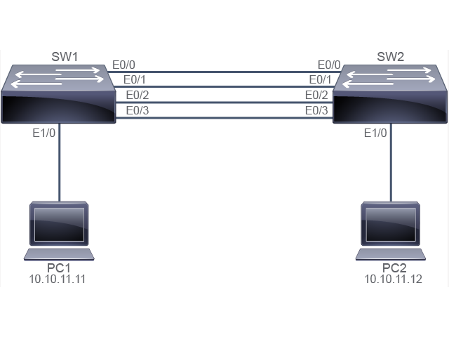

Scenario
Scenario
Note
Read the requirements in the Scenario carefully and use the Configuration Tips to help you do the required steps. If you need further assistance, refer to the Answer Key. Once you have completed the configuration specified, answer the questions.
Ana is testing the EtherChannel configuration for a new LAN implementation. She has completed the physical set-up and IPv4 addressing. She has also created the VLANs. She needs your help with configuring an EtherChannel to bundle the Ethernet interfaces (E0/0, E0/1, E0/2, and E0/3) connecting the two switches. The switches are intended to operate with devices of other vendors, therefore, Ana chooses to implement only standardized protocols. PC1 and PC2 are in VLAN 11.
Here are the requirements for the lab:
- You need to group the existing four links into a single channel group using port channel identifier 12. Switch SW1 needs to initiate the EtherChannel while switch SW2 should only respond to it.
- You need to make sure that the port channel trunk encapsulation is dot1q and then enable trunking on the port channel.
- Once you have completed the configuration, perform a connectivity check between PC1 and PC2 using ping ping. The ping test should be successful.
© 2020 Cisco Systems, Inc.
Job AidJob Aid
Note
If you shut down an interface on a real router or switch, the connected device will see it as "down/down." Due to virtualization specifics, Cisco IOL (Cisco IOS Software on Linux) behavior is slightly different. If you shut down an interface on a router or switch, the connected device will see it as "up/up." In Cisco IOL, the status of an interface can only be "up/up" or "administratively down/down." Also, in the virtual lab environment, all interfaces are Ethernet interfaces and not FastEthernet or GigabitEthernet interfaces, which you are likely to encounter in networks today.
Device Information
| Device | Remote Device Connection |
|---|
| SW1 (Ethernet 0/0) | SW2 (Ethernet 0/0) |
| SW1 (Ethernet 0/1) | SW2 (Ethernet 0/1) |
| SW1 (Ethernet 0/2) | SW2 (Ethernet 0/2) |
| SW1 (Ethernet 0/3) | SW2 (Ethernet 0/3) |
| SW1 (Ethernet 1/0) | PC1 (10.10.11.11) |
| SW2 (Ethernet 1/0) | PC2 (10.10.11.12) |
© 2020 Cisco Systems, Inc.
Configuration TipsConfiguration Tips
Use the interface range command to configure multiple interfaces at the same time.
Use the channel-group command to bundle interfaces and to specify the aggregation method.
After the aggregated link is established, configure trunking parameters on the port-channel, by first using the interface port-channel command.
© 2020 Cisco Systems, Inc.
Answer KeyAnswer Key
- You need to group the existing four links into a single channel group using port channel identifier 12. Switch SW1 needs to initiate the EtherChannel while switch SW2 should only respond to it.
First disable the interfaces on each switch and then configure the port channel:
SW1>enable
SW1#configure terminal
Enter configuration commands, one per line. End with CNTL/Z.
SW1(config)#
SW1(config)# interface range ethernet 0/0-3
SW1(config-if-range)# shutdown
SW1(config-if-range)# channel-group 12 mode active
Creating a port-channel interface Port-channel 12
SW1(config-if-range)#
SW2> enable
SW2# configure terminal
Enter configuration commands, one per line. End with CNTL/Z.
SW2(config)#
SW2(config)# interface range ethernet 0/0-3
SW2(config-if-range)# shutdown
SW2(config-if-range)# channel-group 12 mode passive
Creating a port-channel interface Port-channel 12
SW2(config-if-range)#
- You need to make sure that the port channel trunk encapsulation is dot1q and then enable trunking on the port channel.
First configure the port-channel on each switch:
SW1(config)# interface port-channel 12
SW1(config-if)# switchport trunk encapsulation dot1q
SW1(config-if)# switchport mode trunk
SW1(config-if-range)# exit
SW2(config)# interface port-channel 12
SW2(config-if)# switchport trunk encapsulation dot1q
SW2(config-if)# switchport mode trunk
SW2(config-if-range)# exit
After the port-channel is configured on both switches, then enable the interfaces on both switches (if you enable one side before the other side is configured, you will get errors and the EtherChannel will not come up). Note that you may get error messages as you enable each switch; wait a few seconds for the port channel to come up fully before you verify your configuration.
SW1(config)# interface range Ethernet0/0-3
SW1(config-if-range)# no shutdown
SW2(config)# interface range Ethernet0/0-3
SW2(config-if-range)# no shutdown
- Once you have completed the configuration, perform a connectivity check between PC1 and PC2 using ping. The test should be successful.
PC1> enable
PC1# ping 10.10.11.12
Type escape sequence to abort.
Sending 5, 100-byte ICMP Echos to 10.10.11.12, timeout is 2 seconds:
.!!!!
Success rate is 80 percent (4/5), round-trip min/avg/max = 1/1/2 ms
PC1#
PC2> enable
PC2# ping 10.10.11.11
Type escape sequence to abort.
Sending 5, 100-byte ICMP Echos to 10.10.11.11, timeout is 2 seconds:
!!!!!
Success rate is 100 percent (5/5), round-trip min/avg/max = 1/1/2 ms
PC2>
- Execute the show interfaces trunk command on SW1 to verify the configuration.
SW1#show interfaces trunk
Port Mode Encapsulation Status Native vlan
Po12 on 802.1q trunking 1
Port Vlans allowed on trunk
Po12 1-4094
Port Vlans allowed and active in management domain
Po12 1-4094
Port Vlans in spanning tree forwarding state and not pruned
Po12 1-4094
SW1#
Execute the show etherchannel summary command on SW2 to verify the configuration.
SW2#show etherchannel summary
Flags: D - down P - bundled in port-channel
I - stand-alone s - suspended
H - Hot-standby (LACP only)
R - Layer3 S - Layer2
U - in use f - failed to allocate aggregator
M - not in use, minimum links not met
u - unsuitable for bundling
w - waiting to be aggregated
d - default port
Number of channel-groups in use: 1
Number of aggregators: 1
Group Port-channel Protocol Ports
------+-------------+-----------+-----------------------------------------------
12 Po12(SU) LACP Et0/0(P) Et0/1(P) Et0/2(P)
Et0/3(P)
SW2#
© 2020 Cisco Systems, Inc.
QuestionsQuestions
© 2020 Cisco Systems, Inc.